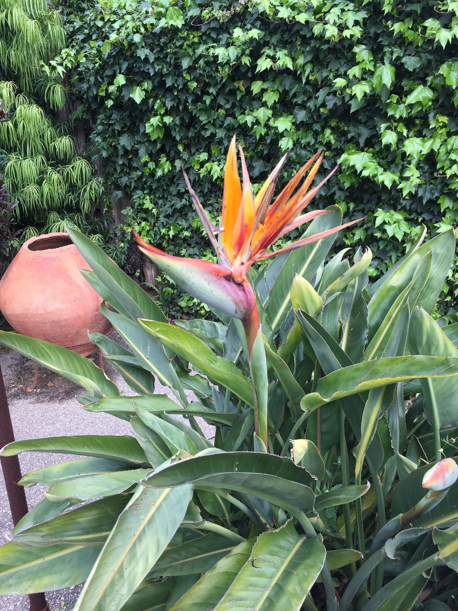

Birds of Paradise

Being back in Boston for almost a week now, I have gone to two yoga classes and learned how much flexibility I lost over the past month or so—noting, of course, that I didn't have very much to begin with). One particular pose, called the bird of paradise, is named after a family of very colorful birds in Oceania and Southeast Asia. It's a pose that I currently lack the flexibility and balance to enter—attempts usually end with me falling on the floor within a few seconds. During my travels in Southern California, I came across an intriguing plant, that kind of reminded me of a colorful bird. I later found out that the plant is called a bird of paradise. The Strelitzia reginae is originally from southern Africa, but somehow made it's way into many southern California gardens.